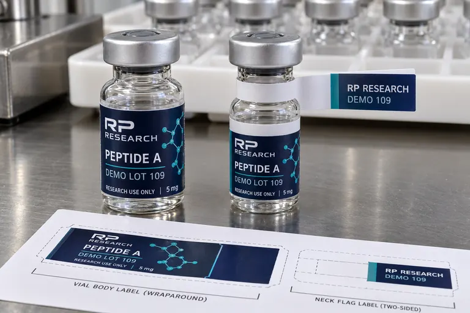

Peptide Vial Labels
Peptide Vial Flag Labels vs Wraparound Labels: Is Extra Space Worth the Snag Risk?
Published October 9, 2026
Compare a small research-vial wrap with an optional flag identifier. Learn where a flag adds legibility, where it catches in trays and what to test before quoting.
Read Guide